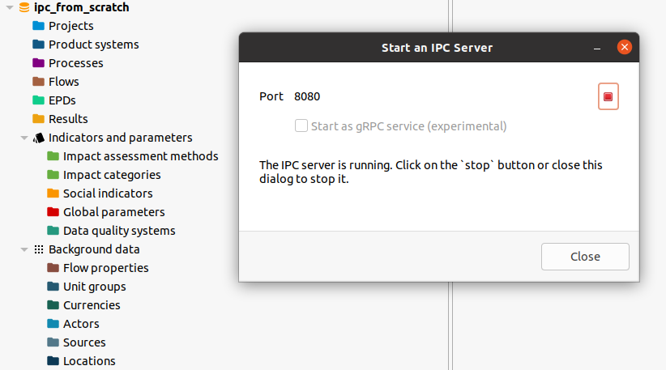
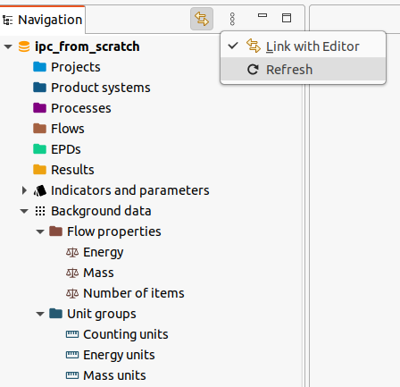
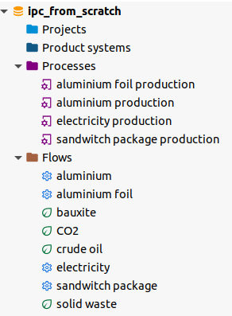

Python IPC - From scratch
In this section we will go through a complete example using the openLCA IPC interface from the olca-ipc.py Python package. As we will create everything from scratch, we first create an empty database and start an IPC server for that database:

In the Python code, we first import the required packages that we will use in
our example. The olca-schema packages comes is a dependency of the olca-ipc
package and contains the data type definitions of the openLCA model and some
utility methods. We will use Pandas for formatting our data output and NumPy,
which is a dependency of Pandas, for checking the calculation. Also, we will
add type annotations in our code, compatible with Python 3.11.
import olca_ipc as ipc
import olca_schema as o
import pandas as pd
import numpy as np
from typing import Callable
A historic example
Our example was taken from Heijungs 19941 and extended a bit. First, we define the technosphere of our system which are 4 processes connected by 4 products:
technosphere = pd.DataFrame(
data=[
[1.0, -50.0, -1.0, 0.0],
[-0.01, 1.0, -1.0, 0.0],
[0.0, 0.0, 1.0, -1.0],
[0.0, 0.0, 0.0, 100],
],
columns=[
"electricity production",
"aluminium production",
"aluminium foil production",
"sandwitch package production",
],
index=[
"electricity [MJ]",
"aluminium [kg]",
"aluminium foil [kg]",
"sandwitch package [Item(s)]",
],
)
print(technosphere)
When we print this data frame, we get the following table:
| electricity production | aluminium production | aluminium foil production | sandwitch package production | |
|---|---|---|---|---|
| electricity [MJ] | 1.00 | -50.0 | -1.0 | 0.0 |
| aluminium [kg] | -0.01 | 1.0 | -1.0 | 0.0 |
| aluminium foil [kg] | 0.00 | 0.0 | 1.0 | -1.0 |
| sandwitch package [Item(s)] | 0.00 | 0.0 | 0.0 | 100.0 |
In the rows, we have our products, in the columns the processes. Inputs have negative and outputs positive values. Thus, for 100 sandwitch packages, we would need 1 kg of aluminium foil (this is how sandwitches were packed in the 90s)2.
Next, we define the interventions of these processes with the environment:
interventions = pd.DataFrame(
data=[
[0.0, -5.0, 0.0, 0.0],
[-0.5, 0.0, 0.0, 0.0],
[3.0, 0.0, 0.0, 0.0],
[2.0, 10.0, 0.0, 1.0],
],
columns=technosphere.columns,
index=[
"bauxite [kg]",
"crude oil [kg]",
"CO2 [kg]",
"solid waste [kg]",
],
)
print(interventions)
| electricity production | aluminium production | aluminium foil production | sandwitch package production | |
|---|---|---|---|---|
| bauxite [kg] | 0.0 | -5.0 | 0.0 | 0.0 |
| crude oil [kg] | -0.5 | 0.0 | 0.0 | 0.0 |
| CO2 [kg] | 3.0 | 0.0 | 0.0 | 0.0 |
| solid waste [kg] | 2.0 | 10.0 | 0.0 | 1.0 |
In the paper, the inventory is calculated for 10 sandwitch packages as the final demand \(f\) of the system, which we can quickly do with NumPy now:
f = [
0.0,
0.0,
0.0,
10,
]
s = np.linalg.solve(technosphere.to_numpy(), f)
g = interventions.to_numpy() @ s
print(pd.DataFrame(g, index=interventions.index))
This gives the expected result:
| bauxite [kg] | -1.01 |
| crude oil [kg] | -5.10 |
| CO2 [kg] | 30.60 |
| solid waste [kg] | 22.52 |
Inventory calculations
Now we do the same in openLCA via the IPC interface. First, we create an IPC client that holds our connection data:
client = ipc.Client(8080)
As we have nothing in our database, we first need to create the units and flow properties (quantity kinds) in which the flows of the examples are measured:
mass_units = o.new_unit_group("Mass units", "kg")
energy_units = o.new_unit_group("Energy units", "MJ")
counting_units = o.new_unit_group("Counting units", "Item(s)")
mass = o.new_flow_property("Mass", mass_units)
energy = o.new_flow_property("Energy", energy_units)
count = o.new_flow_property("Number of items", counting_units)
client.put_all(
mass_units,
energy_units,
counting_units,
mass,
energy,
count,
)
While IPC server is running, you can also continue to use the openLCA user interface, just do not close the dialog of the server. When you refresh the navigation, you will see the newly created unit groups and flow properties:

However, typically you will not create units and flow properties but use the
reference data from openLCA. For example, we can get the flow property Mass
by its name:
print(client.get(o.FlowProperty, name="Mass").to_json())
This will print the JSON serialization of that flow property which is the internal communication format of the IPC interface (and also the standard openLCA data exchange format in general):
{
"@type": "FlowProperty",
"@id": "b24a123b-f5a1-40fb-a481-afeeb50f6159",
"lastChange": "2023-01-26T13:36:37.954Z",
"name": "Mass",
"unitGroup": {
"@type": "UnitGroup",
"@id": "3e912f50-9490-473c-89fc-1393ed2eea03",
"name": "Mass units"
},
"version": "01.00.000"
}
Next, we create the flows of the example. In the snippet below, it iterates over the rows of the data frames and creates a product or elementary flow for each row, extracting the unit from the row label and mapping the corresponding flow property:
def create_flow(
row_label: str, fn: Callable[[str, o.FlowProperty], o.Flow]
) -> o.Flow:
parts = row_label.split("[")
name = parts[0].strip()
unit = parts[1][0:-1].strip()
match unit:
case "kg":
prop = mass
case "MJ":
prop = energy
case "Item(s)":
prop = count
flow = fn(name, prop)
client.put(flow)
return flow
tech_flows = [create_flow(label, o.new_product) for label in technosphere.index]
envi_flows = [
create_flow(label, o.new_elementary_flow) for label in interventions.index
]
Then we iterate over the columns of the data frames and create the corrsponding processes with their inputs and outputs of the flows we just created. One the diagonal of the technosphere matrix, the reference products of the respective processes are located and we set the these exchanges as the quantitative reference of the corresponding process:
def create_process(index: int, name: str) -> o.Process:
process = o.new_process(name)
def exchange(flow: o.Flow, value: float) -> o.Exchange | None:
if value == 0:
return None
if value < 0:
return o.new_input(process, flow, abs(value))
else:
return o.new_output(process, flow, value)
for (i, tech_flow) in enumerate(tech_flows):
value = technosphere.iat[i, index]
e = exchange(tech_flow, value)
if e and i == index:
e.is_quantitative_reference = True
for (i, envi_flow) in enumerate(envi_flows):
value = interventions.iat[i, index]
exchange(envi_flow, value)
client.put(process)
return process
processes = [
create_process(index, name)
for (index, name) in enumerate(technosphere.columns)
]
When you refresh the navigation in openLCA again, you should now see these new processes and flows:

Now we can calculate the inventory of this system. We create a calculation setup
for the sandwitch packaging process as calculation target. We do not need to set
the unit in the setup as it would take the unit of the quantitative reference of
the process by default, but we need to set the amount as we want the result for
10 sandwitches but the process has 100 as quantitative reference. The
calculation immediately returns a result object but this is maybe not ready yet,
so we wait for the calculation to be finished via the wait_until_ready
method:
setup = o.CalculationSetup(
target=o.Ref(ref_type=o.RefType.Process, id=processes[3].id),
unit=count.unit_group.ref_unit, # "Item(s)"
amount=10,
)
result = client.calculate(setup)
result.wait_until_ready()
When the result is ready, we can query the inventory from it:
inventory = result.get_total_flows()
print(
pd.DataFrame(
data=[
(
i.envi_flow.flow.name,
i.envi_flow.is_input,
i.amount,
i.envi_flow.flow.ref_unit,
)
for i in inventory
],
columns=["Flow", "Is input?", "Amount", "Unit"],
)
)
This prints the following expected values:
Flow Is input? Amount Unit
0 CO2 False 30.60 kg
1 crude oil True 5.10 kg
2 solid waste False 22.52 kg
3 bauxite True 1.01 kg
Finally, when we do not need the result anymore, we need to dispose it so that allocated resources can be freed on the openLCA side:
result.dispose()
Full workbook
Below is the full example. Note that you can run it as a note-book, cell by cell, in VS Code:
# %%
# ANCHOR: imports
import olca_ipc as ipc
import olca_schema as o
import pandas as pd
import numpy as np
from typing import Callable
# ANCHOR_END: imports
# %%
# ANCHOR: techsphere
technosphere = pd.DataFrame(
data=[
[1.0, -50.0, -1.0, 0.0],
[-0.01, 1.0, -1.0, 0.0],
[0.0, 0.0, 1.0, -1.0],
[0.0, 0.0, 0.0, 100],
],
columns=[
"electricity production",
"aluminium production",
"aluminium foil production",
"sandwitch package production",
],
index=[
"electricity [MJ]",
"aluminium [kg]",
"aluminium foil [kg]",
"sandwitch package [Item(s)]",
],
)
print(technosphere)
# ANCHOR_END: techsphere
# %%
# ANCHOR: envisphere
interventions = pd.DataFrame(
data=[
[0.0, -5.0, 0.0, 0.0],
[-0.5, 0.0, 0.0, 0.0],
[3.0, 0.0, 0.0, 0.0],
[2.0, 10.0, 0.0, 1.0],
],
columns=technosphere.columns,
index=[
"bauxite [kg]",
"crude oil [kg]",
"CO2 [kg]",
"solid waste [kg]",
],
)
print(interventions)
# ANCHOR_END: envisphere
# %%
# ANCHOR: numsol
f = [
0.0,
0.0,
0.0,
10,
]
s = np.linalg.solve(technosphere.to_numpy(), f)
g = interventions.to_numpy() @ s
print(pd.DataFrame(g, index=interventions.index))
# ANCHOR_END: numsol
# %%
# ANCHOR: mkclient
client = ipc.Client(8080)
# ANCHOR_END: mkclient
# %%
# ANCHOR: units
mass_units = o.new_unit_group("Mass units", "kg")
energy_units = o.new_unit_group("Energy units", "MJ")
counting_units = o.new_unit_group("Counting units", "Item(s)")
mass = o.new_flow_property("Mass", mass_units)
energy = o.new_flow_property("Energy", energy_units)
count = o.new_flow_property("Number of items", counting_units)
client.put_all(
mass_units,
energy_units,
counting_units,
mass,
energy,
count,
)
# ANCHOR_END: units
# %%
# ANCHOR: mass
print(client.get(o.FlowProperty, name="Mass").to_json())
# ANCHOR_END: mass
# %%
# ANCHOR: flows
def create_flow(
row_label: str, fn: Callable[[str, o.FlowProperty], o.Flow]
) -> o.Flow:
parts = row_label.split("[")
name = parts[0].strip()
unit = parts[1][0:-1].strip()
match unit:
case "kg":
prop = mass
case "MJ":
prop = energy
case "Item(s)":
prop = count
flow = fn(name, prop)
client.put(flow)
return flow
tech_flows = [create_flow(label, o.new_product) for label in technosphere.index]
envi_flows = [
create_flow(label, o.new_elementary_flow) for label in interventions.index
]
# ANCHOR_END: flows
# %%
# ANCHOR: processes
def create_process(index: int, name: str) -> o.Process:
process = o.new_process(name)
def exchange(flow: o.Flow, value: float) -> o.Exchange | None:
if value == 0:
return None
if value < 0:
return o.new_input(process, flow, abs(value))
else:
return o.new_output(process, flow, value)
for (i, tech_flow) in enumerate(tech_flows):
value = technosphere.iat[i, index]
e = exchange(tech_flow, value)
if e and i == index:
e.is_quantitative_reference = True
for (i, envi_flow) in enumerate(envi_flows):
value = interventions.iat[i, index]
exchange(envi_flow, value)
client.put(process)
return process
processes = [
create_process(index, name)
for (index, name) in enumerate(technosphere.columns)
]
# ANCHOR_END: processes
# %%
# ANCHOR: calc
setup = o.CalculationSetup(
target=o.Ref(ref_type=o.RefType.Process, id=processes[3].id),
unit=count.unit_group.ref_unit, # "Item(s)"
amount=10,
)
result = client.calculate(setup)
result.wait_until_ready()
# ANCHOR_END: calc
# %%
# ANCHOR: inventory
inventory = result.get_total_flows()
print(
pd.DataFrame(
data=[
(
i.envi_flow.flow.name,
i.envi_flow.is_input,
i.amount,
i.envi_flow.flow.ref_unit,
)
for i in inventory
],
columns=["Flow", "Is input?", "Amount", "Unit"],
)
)
# ANCHOR_END: inventory
# %%
# ANCHOR: free-inventory
result.dispose()
# ANCHOR_END: free-inventory
# %%
Reinout Heijungs: A generic method for the identification of options for cleaner products. Ecological Economics, Volume 10, Issue 1, 1994, Pages 69-81, ISSN 0921-8009, https://doi.org/10.1016/0921-8009(94)90038-8.
it is of course just an illustrative example and not real data